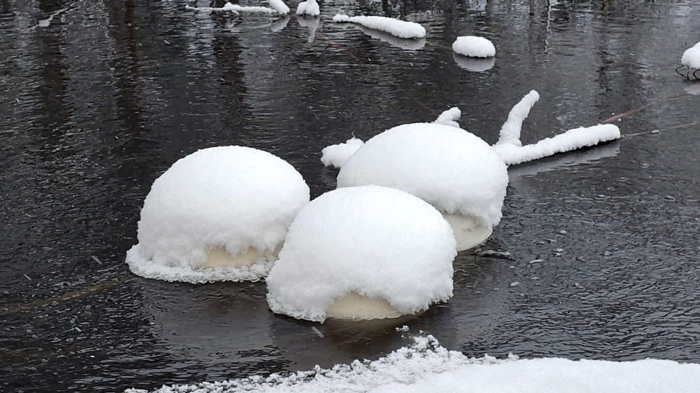

OceanSite Oy · carbon credits · restoration credits · measured at the sediment
Credits that start from a measured lake bottom.
Restore oxygen, measure the change at the sediment, and receive credit-ready evidence for carbon and restoration instruments — for water-area owners, municipalities and companies buying credits.
This page is OceanSite’s credit programme. The underlying oxygenation service — for municipalities, companies and water-area owners who want the restoration itself, not a credit — is offered directly at oscean.site. Same company, same measurements, two ways to buy the outcome.
Two instruments, one intervention
Carbon credits
Anoxic sediment produces methane. Oxygenating the deep zone suppresses the conditions that generate it. The avoided emission is the creditable quantity.
Restoration credits
The same intervention produces a documented ecological recovery — the unit that nature- restoration and biodiversity frameworks are built to buy.
What you avoid
Paper credits bought on a model
These are anchored to measurement at the place the change happens — the sediment, not a spreadsheet.
A lake investment with nothing to show
The baseline and the record give the improvement a value others can check — and the same evidence serves your ESG reporting.
Starting with equipment and hoping
Without a documented starting point there is no creditable change, only an improvement nobody can value.
How it works — four steps
Baseline
Before anything is installed, the deep zone is measured. Without a documented starting point there is no creditable change — only an improvement nobody can price.
Oxygenation
Delivered with SansOx equipment — the OxTube unit stays on shore; only a pipe and the bottom manifold enter the water. Operable under ice when designed for the site.
Verification
Continuous and sampled monitoring against the baseline, reported by a party that is not the supplier. A credit signed off by the vendor is not a credit.
Credit-ready evidence
One measurement, two potential instruments — a carbon credit and a restoration credit. Whether both can be issued is decided per framework.
What we measured at Rekilampi
Independently measured Near-bottom oxygen reached 0.28–0.36 mg/L in 2026, compared with about 0.0–0.1 mg/L at baseline. Measurements attributed to Karelia University of Applied Sciences. The full reference →

Oxygenation continues under ice when the unit is designed for the site.
Who this page is for
Credit buyers
Corporates and funds seeking emission-reduction and nature units with a physical, locatable and re-measurable origin.
Where we sit in the chain
The water is treated, the result is measured, the change becomes evidence. Three companies, one coordinated delivery — and you sign once.
The OxTube unit dissolves gas into the flow inside your existing pipe.
Visit SansOx → MeasureSpringNet Solutions OySensors, control software and continuous data — from baseline to report.
Visit SpringNet →Turns the documented change into credit-ready evidence.
You are hereThe three companies are separately registered. The group has no published parent company or joint trading name yet, and none is claimed on this page.
What we do not claim
Start with the baseline, not the equipment.
One water body, one documented starting point. Every instrument that follows is built on it.
Start with a baseline